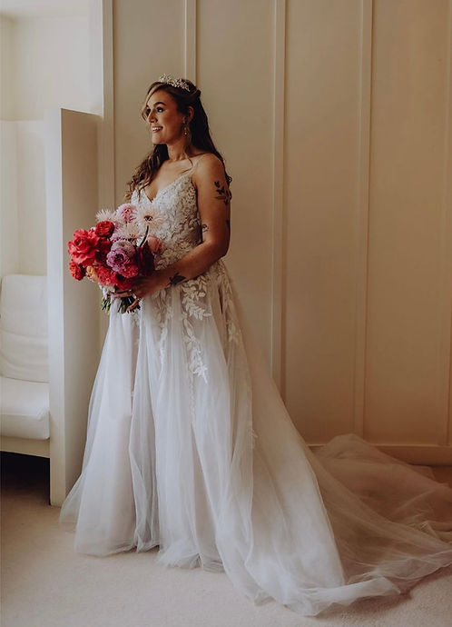
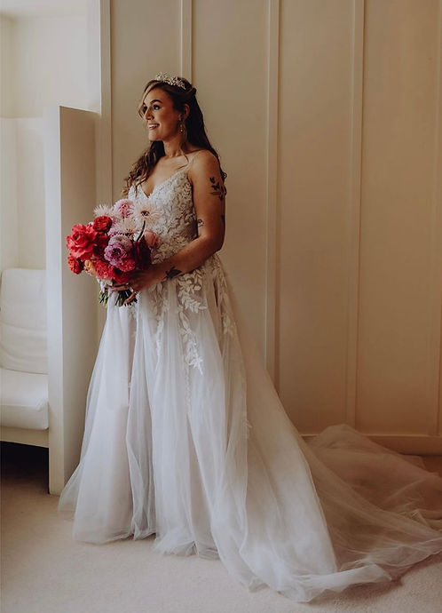

Weddings with Starry Skies
Every couple’s story is unique, and your flowers should be too. We design relaxed, natural arrangements that complement your venue and atmosphere — always thoughtful, never overdone.
 



How it works
- 1 — Fill out the enquiry form with as much info as possible and we will get back to you to arrange a chat on the phone to go over how we work, and go over some ideas and suggestions for your wedding flowers. We will also chat budget and make sure we make the most out of it.
- 2 — We will go away and create a vision board and costings list for your flowers. These are ideas based on your style, colour palates, season and budget and should give you a good idea of what to expect from Starry Skies as your florist.
- 3 — If you think we are the florist for you, we get you booked in and take a deposit to secure the date.
- 4 — We will be in touch nearer the date of your wedding to finalise any details and make sure you feel confident in the flower plans.
- 5 — The big day arrives and we will deliver your flowers to you and set any flowers up at your venue. All you need to do is have the best day ever!